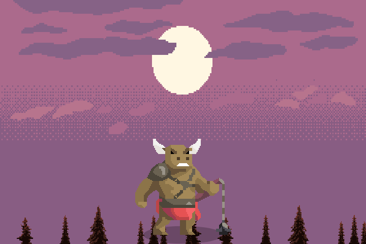
铁角牛魔
原野上的魔物与牛魔 · 推荐 Lv1 起
招牌技能跃起震地(击败后有几率掉落同名怪物技能石)
主线剧情
铁角牛魔把山妹公主关在古堡最高的塔里。公主是镇长的女儿,也是全镇孩子们最喜欢的姐姐。去吧,无名——把她带回家。
后记:公主回来了,全镇都在欢呼!……可我总觉得,这头牛魔不是自己找上门来的。
v1.52 手机纪念版 · 全部首领与装备介绍(数据和图片都直接取自游戏)
首领在每关的最后登场;一星通关后开放二星、三星,星级越高首领越强、掉落越好。

原野上的魔物与牛魔 · 推荐 Lv1 起
招牌技能跃起震地(击败后有几率掉落同名怪物技能石)
铁角牛魔把山妹公主关在古堡最高的塔里。公主是镇长的女儿,也是全镇孩子们最喜欢的姐姐。去吧,无名——把她带回家。
后记:公主回来了,全镇都在欢呼!……可我总觉得,这头牛魔不是自己找上门来的。
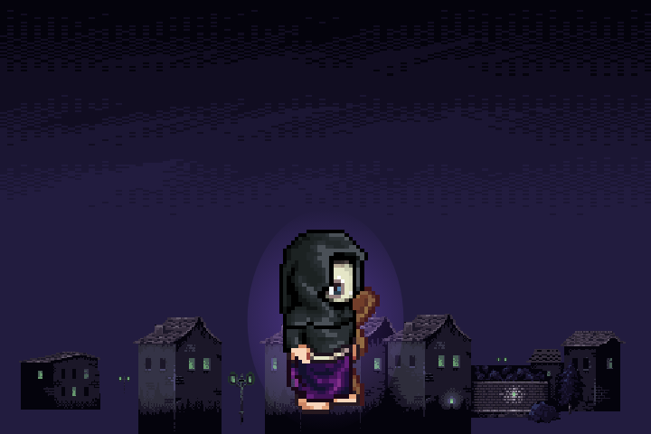
蒙面的黑衣法师坐镇 · 推荐 Lv4 起
招牌技能暗影雷雨(击败后有几率掉落同名怪物技能石)
去阻止他。如果……如果有机会,替我摘下他的面具。我想知道,那张脸还是不是我记得的样子。
后记:女神降临,召唤阵里的魔兽全被圣光吞没,师兄消失在圣光里……而女神为了守护我们,化作了石像。我们又一次,欠了她。
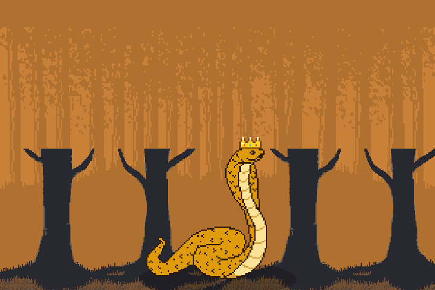
金色蛇王盘踞的密林 · 推荐 Lv8 起
招牌技能毒雨(击败后有几率掉落同名怪物技能石)
金色蛇王已经冲出森林,压塌了镇外的两座农舍。它是森林之主,我们拿走了它的蛋,它来讨回公道……可镇上的人也要活下去。去吧,击败它,让它退回森林深处。
后记:蛇王退回了森林。还有——草丛里一直躲着一个人,他说他是晨曦镇的村长,想见见你。
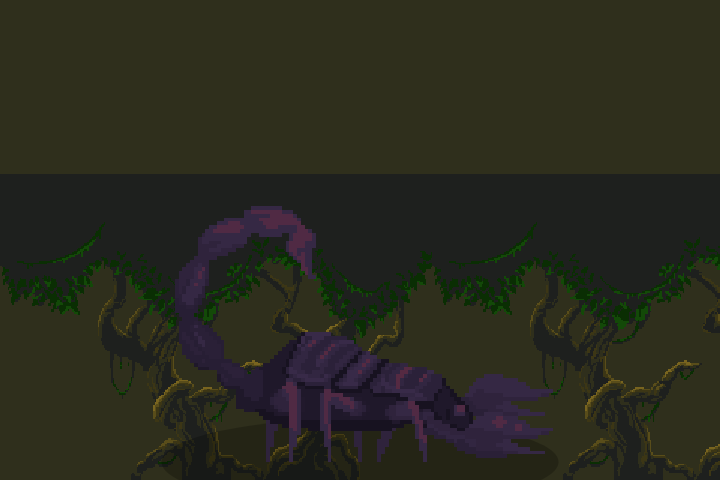
毒蝎横行的森林深处 · 推荐 Lv12 起
招牌技能连环毒针(击败后有几率掉落同名怪物技能石)
黑棘巨蝎在密林深处筑了巢,背上带着魔王的印记。它已经毒倒了半个伐木场的人。勇士,拜托你了——击败它,让密林恢复平静。
后记:巨蝎倒下了……有件事,我必须告诉你。回镇上来找我吧。
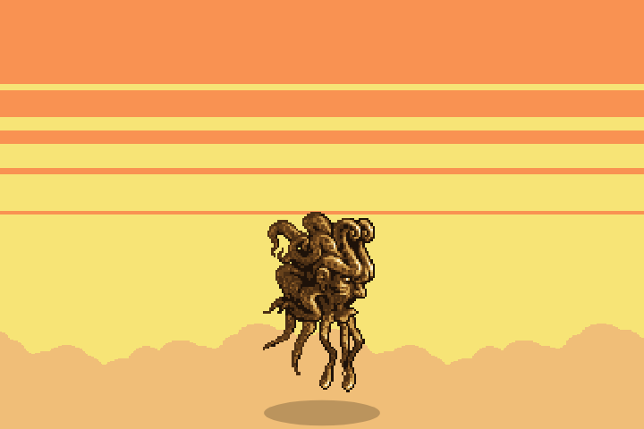
沙渊古神沉睡的洞窟 · 推荐 Lv16 起
招牌技能沙渊触手(击败后有几率掉落同名怪物技能石)
沙渊古神是封在沙海下面的远古怪物,矿工挖穿了封印,魔王又趁机把它收作魔将。它的触手会从沙地里钻出来——看准地上的预警魔法阵,击败它,平息沙暴!
后记:沙暴停了,荒漠重新露出了星空。洞窟深处没有找到碎片——只有一行刻字:「碎片会回到最需要守护的地方」。
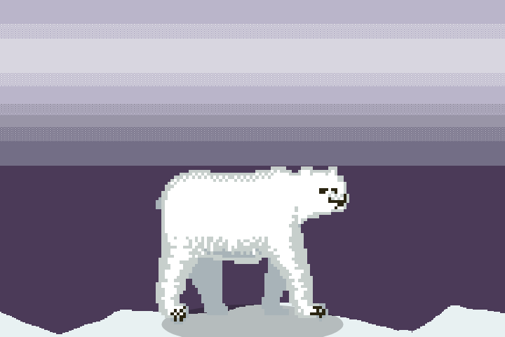
北极熊镇守的冰封山巅 · 推荐 Lv20 起
招牌技能暴风雪(击败后有几率掉落同名怪物技能石)
北极熊被猎人的陷阱夹伤了腿,疼得发了狂,暴风雪也越刮越大。它救了我的儿子……可它现在连自己都控制不住了。勇士,击倒它,让它冷静下来——然后,我们要亲手把那个夹子取下来。
后记:北极熊跪倒在冰原上。村长亲手取下了它腿上的铁夹子,猎人们拆掉了所有陷阱,暴风雪停了。回到镇上时,女神像的羽翼亮起了一道微弱的金光——像是在说:「谢谢你们,学会了互相守护。」(主线第一部 · 完)
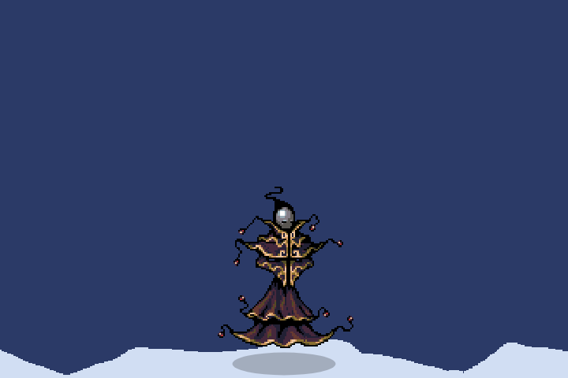
血月巫王作法的雪松林 · 推荐 Lv24 起
招牌技能血月法球(击败后有几率掉落同名怪物技能石)
今晚就是血月。铁叔查到了:六十年前那次血月,是一个叫「巫王」的人在雪松林深处举行的仪式——血月一升起,雪原的狼群就会发疯,连守了这片长夜几百年的银狼也被它困住了。勇士,打断它的仪式,让狼群醒过来!
后记:巫王的法袍化成了灰,血月慢慢褪去。林子深处传来一声悠长的狼嚎——那只银狼终于从血月的疯狂里醒了过来,最后看了一眼晨曦镇的方向,慢慢走回了雪松林深处。那一夜,女神像的羽翼又亮了一点;镇上的人第一次觉得,远处的狼嚎声竟是温柔的——像是守夜人在说:「我还在。」(主线第二部 · 第七章 完)
怨婴哭声回荡的旧都 · 推荐 Lv28 起
招牌技能百鬼哭夜(击败后有几率掉落同名怪物技能石)
银太郎在地铁出口外的十字路口。他的身体只有婴儿那么小,可是背后的影子比整座楼还高。他哭的时候,整座城市的灯都会熄灭。勇士——击败他,拿回女神的灵魂碎片。然后……如果可以的话,让他安安静静地睡一觉吧。
后记:哭声停了。一块淡紫色的碎片从银太郎胸口落下,他小小的身体化成了光,像是终于被谁抱了起来。那一夜,霓川所有的窗户都亮了一下——三十年来,第一次像是有人在家。女神灵魂碎片 · 第一块,找到了。(主线第二部 · 第八章 完)
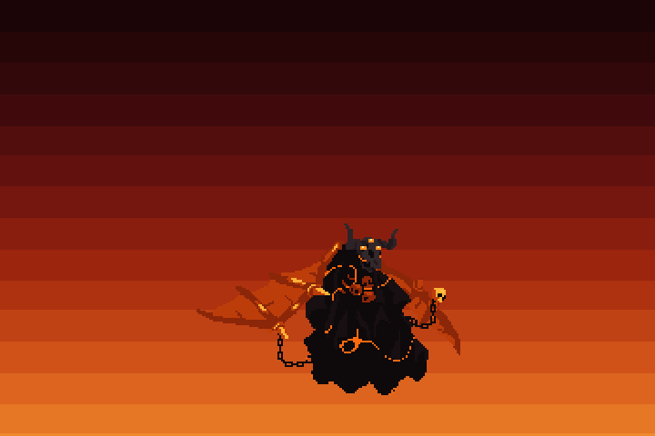
熔狱魔神沉睡的火山 · 推荐 Lv31 起
招牌技能火山爆发(击败后有几率掉落同名怪物技能石)
熔狱魔神的身体是黑色的岩石,岩缝里流着熔岩,没有脸,只有三只燃烧的眼睛。它会让地面裂开、让火山喷发,还会用火焰锁链把你拉到面前。记住:看好脚下的安全位置,别让自己烧到过热。勇士,让这座火山重新睡去吧!
后记:三只眼睛一只一只熄灭,魔神的身体碎成了冷却的黑石。火山终于安静下来,天空也慢慢褪回了原来的颜色。(主线第二部 · 第九章 完)
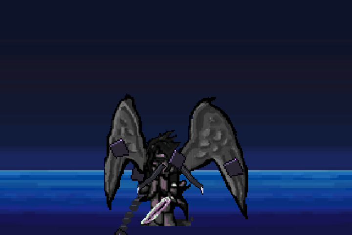
归蝇盘旋的夜空 · 推荐 Lv34 起
招牌技能黑翼俯冲(击败后有几率掉落同名怪物技能石)
归蝇就在船尾高台上。它不会正面跟你打——它会飞走、骗你出手、躲开你的攻击。别着急,它冲下来的时候就是机会。勇士,把女神的碎片拿回来!
后记:黑色的羽毛落满了甲板,幽灵船降到了海面上,慢慢沉了下去。一块淡紫色的碎片留在了船尾。女神灵魂碎片 · 第三块,找到了。(主线第二部 · 第十章 完)
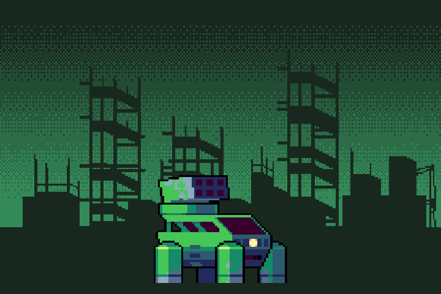
钢铁暴君镇守的机械城 · 推荐 Lv50
招牌技能导弹齐射(击败后有几率掉落同名怪物技能石)
钢铁暴君守着要塞的核心,身上挂满了导弹和机枪,半血以后还会叫来无人机。勇士,它曾经是一个想守护名字的人。打碎那台机器,把锁在里面的名字还给这座城吧。
后记:机甲的核心裂开,成千上万个名字像萤火一样飞上天空,城里的人一个接一个地抬起头,念出了自己的名字。核心深处只剩一块没有字的铭牌——钟表匠到最后也没想起自己是谁。夜空里,司名身边那颗若隐若现的小暗星,又亮了一点。(主线第三部 · 第十一章 完)
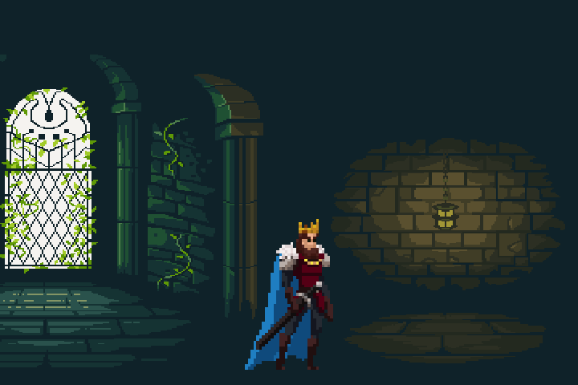
冰晶雪台上的夜王之城 · 推荐 Lv52
招牌技能王威震慑(击败后有几率掉落同名怪物技能石)
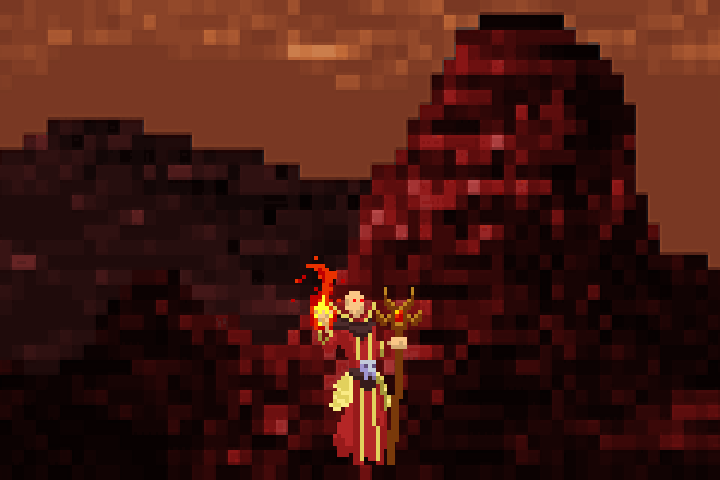
火山深处的焚天炎君 · 推荐 Lv54
招牌技能陨火雨(击败后有几率掉落同名怪物技能石)
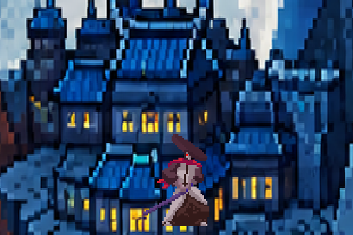
月光下的蓝瓦忍者城郭 · 推荐 Lv55
招牌技能千本苦无(击败后有几率掉落同名怪物技能石)
城主叫「影主·胧」,一个戴斗笠的红衣剑客。传说他会分身、会瞬身,居合一闪就能把影子和人一起斩断。他把全城人的名字缝进了影子里,说「没有名字,噬名者就找不到我们」。勇士,躲起来不是办法,把他们的名字还给月光吧。
后记:斗笠落地,胧的影子里飘出一个个名字,像落樱一样洒满城郭。他低声念出了自己的本名,第一次抬头看了看月亮。夜空里,司名身边那颗小暗星,又亮了一点。(主线第三部 · 第十四章 完)
千钟之主沉睡的钟楼 · 推荐 Lv55
招牌技能连环闹铃(击败后有几率掉落同名怪物技能石)
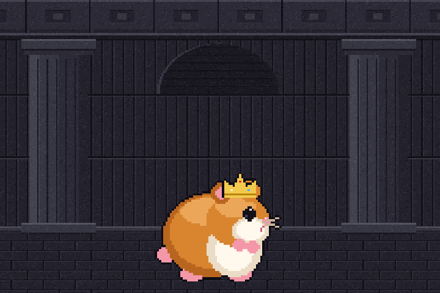
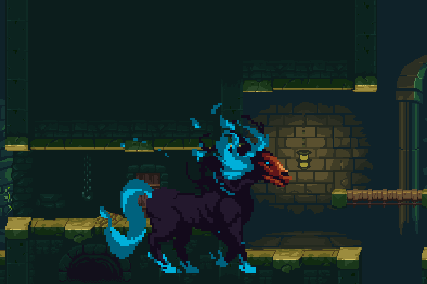
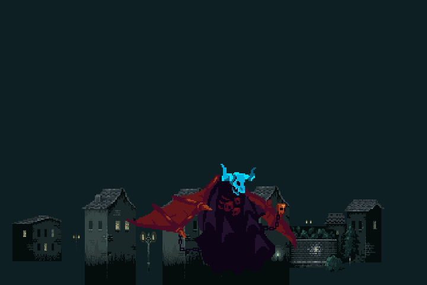
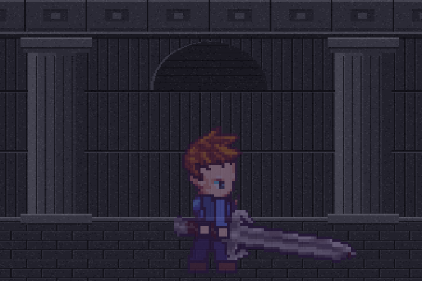
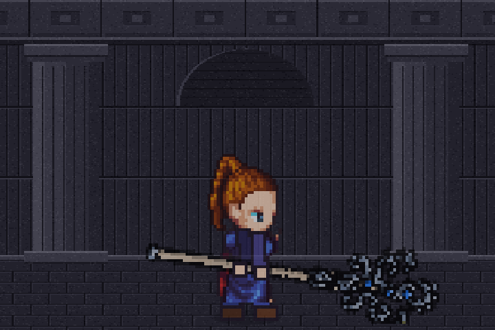
招牌技能黑洞(击败后有几率掉落同名怪物技能石)
装备有 6 个部位:头饰、战甲、项链、戒指(这 4 件是防具,可以带特性),剑和法杖(剑士 / 法师各用一把,按 L 切换)。 系列按关卡掉落:旅者(第一、二关)→ 林王(第三、四关)→ 荒漠(第五~七关)→ 雪原(第八~十关)→ 机械(暗黑大陆)。下表是各品质的白字(固定属性);每件另外有 3 条随机绿字,可以锻造(每级白字 +10%,最高 5 级)。
| 部位 | 普通 | 精良 | 稀有 | 史诗 |
|---|---|---|---|---|
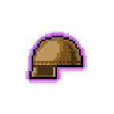 头饰 | 生命 6 · 魔力 6 · 攻击 1 · 防御 2 | 生命 10 · 魔力 10 · 攻击 2 · 防御 2 | 生命 14 · 魔力 14 · 攻击 2 · 防御 4 | 生命 20 · 魔力 20 · 攻击 3 · 防御 5 |
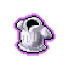 战甲 | 生命 10 · 防御 4 | 生命 16 · 防御 6 | 生命 24 · 防御 10 | 生命 34 · 防御 14 |
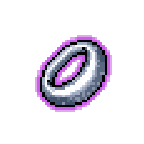 戒指 | 生命 6 · 攻击 2 | 生命 10 · 攻击 3 | 生命 14 · 攻击 5 | 生命 20 · 攻击 7 |
| 项链 | 闪避 11 · 防御 2 | 闪避 17 · 防御 2 | 闪避 23 · 防御 4 | 闪避 28 · 防御 5 |
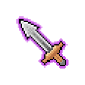 剑 | 攻击 10 | 攻击 13 | 攻击 17 | 攻击 22 |
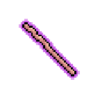 法杖 | 攻击 12 | 攻击 15 | 攻击 21 | 攻击 27 |
| 部位 | 普通 | 精良 | 稀有 | 史诗 |
|---|---|---|---|---|
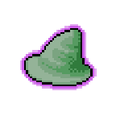 头饰 | 生命 36 · 魔力 36 · 攻击 6 · 防御 5 | 生命 58 · 魔力 58 · 攻击 10 · 防御 7 | 生命 86 · 魔力 86 · 攻击 14 · 防御 11 | 生命 122 · 魔力 122 · 攻击 20 · 防御 15 |
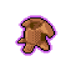 战甲 | 生命 60 · 防御 12 | 生命 96 · 防御 19 | 生命 144 · 防御 29 | 生命 204 · 防御 41 |
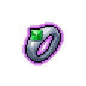 戒指 | 生命 36 · 攻击 12 | 生命 58 · 攻击 19 | 生命 86 · 攻击 29 | 生命 122 · 攻击 41 |
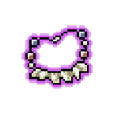 项链 | 闪避 15 · 防御 5 | 闪避 22 · 防御 7 | 闪避 29 · 防御 11 | 闪避 37 · 防御 15 |
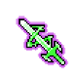 剑 | 攻击 35 | 攻击 53 | 攻击 77 | 攻击 107 |
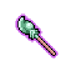 法杖 | 攻击 44 | 攻击 67 | 攻击 99 | 攻击 138 |
| 部位 | 普通 | 精良 | 稀有 | 史诗 |
|---|---|---|---|---|
| 头饰 | 生命 78 · 魔力 78 · 攻击 13 · 防御 9 | 生命 125 · 魔力 125 · 攻击 21 · 防御 14 | 生命 187 · 魔力 187 · 攻击 31 · 防御 22 | 生命 265 · 魔力 265 · 攻击 44 · 防御 31 |
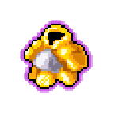 战甲 | 生命 130 · 防御 24 | 生命 208 · 防御 38 | 生命 312 · 防御 58 | 生命 442 · 防御 82 |
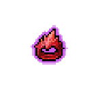 戒指 | 生命 78 · 攻击 26 | 生命 125 · 攻击 42 | 生命 187 · 攻击 62 | 生命 265 · 攻击 88 |
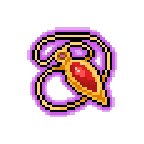 项链 | 闪避 18 · 防御 9 | 闪避 27 · 防御 14 | 闪避 36 · 防御 22 | 闪避 45 · 防御 31 |
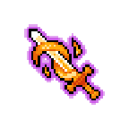 剑 | 攻击 70 | 攻击 109 | 攻击 161 | 攻击 226 |
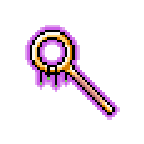 法杖 | 攻击 90 | 攻击 140 | 攻击 208 | 攻击 292 |
| 部位 | 普通 | 精良 | 稀有 | 史诗 |
|---|---|---|---|---|
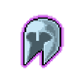 头饰 | 生命 132 · 魔力 132 · 攻击 22 · 防御 15 | 生命 211 · 魔力 211 · 攻击 35 · 防御 24 | 生命 317 · 魔力 317 · 攻击 53 · 防御 36 | 生命 449 · 魔力 449 · 攻击 75 · 防御 51 |
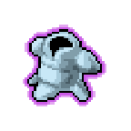 战甲 | 生命 220 · 防御 40 | 生命 352 · 防御 64 | 生命 528 · 防御 96 | 生命 748 · 防御 136 |
| 戒指 | 生命 132 · 攻击 44 | 生命 211 · 攻击 70 | 生命 317 · 攻击 106 | 生命 449 · 攻击 150 |
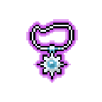 项链 | 闪避 21 · 防御 15 | 闪避 32 · 防御 24 | 闪避 43 · 防御 36 | 闪避 53 · 防御 51 |
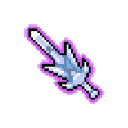 剑 | 攻击 115 | 攻击 181 | 攻击 269 | 攻击 379 |
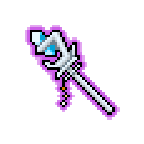 法杖 | 攻击 148 | 攻击 234 | 攻击 348 | 攻击 491 |
| 部位 | 普通 | 精良 | 稀有 | 史诗 |
|---|---|---|---|---|
| 头饰 | 生命 180 · 魔力 180 · 攻击 30 · 防御 20 | 生命 288 · 魔力 288 · 攻击 48 · 防御 31 | 生命 432 · 魔力 432 · 攻击 72 · 防御 47 | 生命 612 · 魔力 612 · 攻击 102 · 防御 66 |
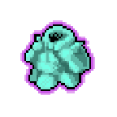 战甲 | 生命 300 · 防御 52 | 生命 480 · 防御 83 | 生命 720 · 防御 125 | 生命 1020 · 防御 177 |
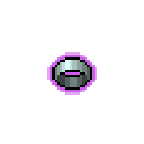 戒指 | 生命 180 · 攻击 60 | 生命 288 · 攻击 96 | 生命 432 · 攻击 144 | 生命 612 · 攻击 204 |
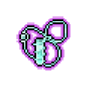 项链 | 闪避 25 · 防御 20 | 闪避 37 · 防御 31 | 闪避 50 · 防御 47 | 闪避 62 · 防御 66 |
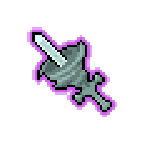 剑 | 攻击 155 | 攻击 245 | 攻击 365 | 攻击 515 |
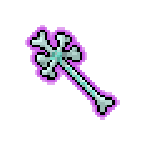 法杖 | 攻击 200 | 攻击 317 | 攻击 473 | 攻击 668 |
神秘副本 4 首领掉落火之大剑 / 火之法杖;真~火之武器用火之武器加材料在熔炉制作。
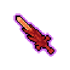
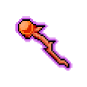
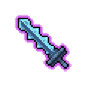
防具的特性:同一特性穿 2 件、4 件分别有套装效果;大师制作装备特性效果翻倍。
剑:攻击 +6 / 8 / 10 / 13法杖:攻击 +6 / 8 / 10 / 13头饰:魔力 +20 / 24 / 30 / 40战甲:生命 +40 / 48 / 60 / 80项链:防御 +6 / 8 / 10 / 13戒指:暴击 +16 / 20 / 24 / 32时装:防御 +6 / 8 / 10 / 13翅膀:暴击 +16 / 20 / 24 / 32
Lv2 强化石(+4~+6)起加值 ×2.5。
攻击 10~15魔力 200~220防御 20~30暴击 80~90闪避 50~60
暴击宝石:暴击率 +15%攻击宝石:攻击力 +3%HP宝石:生命值 +6%防御宝石:防御力 +4%